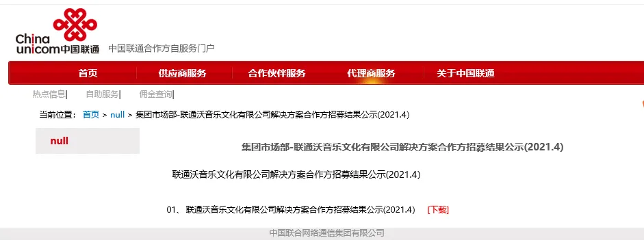
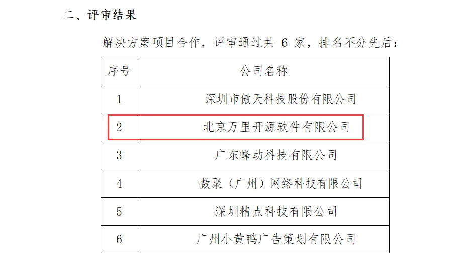

喜讯 | 万里数据库成功入选联通沃音乐解决方案合作方
缤纷五月，喜讯频传。近日，万里数据库与联通沃音乐再度达成合作，成功签约成为其解决方案合作方。万里数据库将通过自身核心、专业的数据库产品能力为联通沃音乐助力赋能，打造数智联通沃音乐。


▲评审结果截图
为积极响应中国联通集团 5G 战略，更好地为中国联通3亿用户服务，打造商务智能体系全方位产品矩阵，联通沃音乐于2020年11月面向全国招募合作方。最终，经过沃音乐专家小组在公司实力、解决方案能力、团队运营支撑能力等多方面的评审考察，万里数据库脱颖而出，入选成为其合作方之一。
联通沃音乐是中国联通全国性音乐业务品牌，中国联通新文创领域全资子公司，拥有十余年数据沉淀经验。近期将发布一款全新的数据智能平台，可为联通集团服务的新文创领域客户提供全流程场景的数据技术服务及大数据解决方案。
万里数据库作为国内分布式数据库知名企业，专注数据库研发20余年，公司研发的新一代分布式数据库经过十余年的市场验证，在功能、性能、稳定性、易用性等方面均处于行业领先水平，历经500多个业务场景的锤炼，目前广泛应用于金融、运营商、能源、政府、互联网等多个行业领域。
得益于双方在各自业务领域的优势成就，早在此之前，万里数据库便与联通沃音乐进行了多次深度合作与交流：
2020年5月，万里数据库与联通沃音乐完成“云签约”，共建5G数据智能技术服务平台；
2021年1月，万里数据库与联通沃音乐再度携手，共建海纳数据智能联合研发实验室；
2021年1月底，5G新文创峰会暨沃音乐合作伙伴大会上，万里数据库荣获 “2020年度优秀科技创新合作方” 奖，充分获得联通沃音乐肯定。
数字经济时代，数据价值得到前所未有的凸显。因万里数据库拥有专业的数据库产品能力及联通沃音乐拥有的大数据解决方案整合能力，双方的强强联合、合作共赢成为必然选择。
未来，双方将借助各自业务及资源优势，更好服务于国家5G战略，合力为联通3亿用户提供更智能、数字化的产品与技术服务，助力用户畅享便捷生活。
推荐阅读1.万里数据库又双叒叕获大奖
2. 万里数据库与联通在线沃音乐携手 共建海纳数据智能联合研发实验室
3. 万里开源与联通沃音乐完成“云签约”，共建5G数据智能技术服务平台


扫码二维码
关注公众号